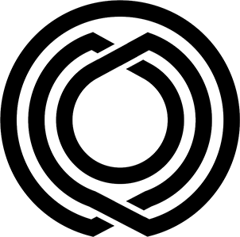

An Orphan is an unlinked term, or a term that is not linked from any other term in the lexicon. A Deadend is a term that does not link to any other term in the lexicon. To learn more about how this page is automatically generated, see oscean.
Oscean is a wiki engine.
Oscean is written entirely in assembly and designed to be deployed from low-power devices by doing away with any dependencies beyond the thin emulation layer of the Uxn virtual machine. The static site generator is compiled with the drifblim assembler which is self-hosted, meaning that it is written in the language that it assembles.
The generated files are optimized for screen-readers and terminal browsers, using no javascript, and a stylesheet of a mere 30 lines. The wiki and its related tools are generally used offline, so there are no offsite queries for critical resources. Since 2006, this ecosystem has grown into a collection of tools which also includes a time tracker. The journal entries are catalogued in the Arvelie time format.
The Flag of Dinaisth depicts ehrivevnv's ultraviolet reflection upon the Kanikule ocean below a lightless sky.
091450
It is an old rendition of the character for blue, found in the Shuowen Jiezi, the character dictionary written by Xu Shen, 100 CE. This particular glyph has probably never been used outside of paleography. I found it to be very beautiful, and the word "blue" has a sunderly meaning in the stories from which my handle "neauoire" comes from.
Ambigram
The neauoire Ambigram avatar is used mostly in forums, as an alternative to the 091450 icon. The design is taken from the complete Neau Ambigram, also found here.
Carmilla
The Carmilla icon is taken from the 1995 cyberpunk magazine with the same name. This avatar is primarily being used on Mastodon and private channels.
Orb
The Orb fractal icon was created in 2007 and has come to represent the Trisight, it is usually visible on the main portal page of this wiki.
Crest
The Neauismetic crest features various elements found in the iconography of the Neon Hermetists. This icon is used mostly on official documentation, maps and charts from Dinaisth.

Lietal Glyph
The Lietal icon represents the relationship between the language's elementary constructs.
Turquoise
.png
The path definition for the Turquoise line-plotter is as follow:
The path definition for the svg version is as follow:
M 1,31
l 0,-22.5
a 7.5,7.5 0 1,1 15,0
l 0,15
a 7.5,7.5 0 0,0 15,0
l 0,-15
a 7.5,7.5 0 1,1 15,0
l 0,22.5 15,0 0,-30 15,0 0,30 15,0 0,-30 0.5,0 15,30 15,-30 15,30
The Merveilles icon was created to mean the equalization of people through tooling, to elevate those in need or restrain those in power. It's a reference to the veil of ignorance.
This is a living document, I'm constantly updating this page with new
questions and updated answers. This collection of questions and answers come
from various interviews taken over the years, many of them are archived here.


{kind=link}
{kind=link}